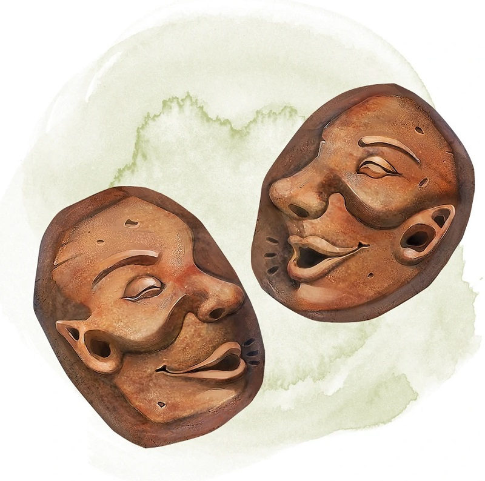

Pierres de communication à distance
[ Sending Stones ] [ Pierres messagères ]
Objet merveilleux, peu commun
Les pierres de communication à distance fonctionnent par paire, chacune de ces pierres lisses étant sculptée pour correspondre à sa pierre complémentaire.
Tant que vous touchez une pierre, vous pouvez utiliser une action pour lancer le sort communication à distance grâce à elle. La cible du sort est le porteur de l'autre pierre. Si aucune créature ne porte l'autre pierre, vous en êtes averti dès que vous utilisez votre pierre, et le sort n'est pas lancé.
Une fois que le sort communication à distance est lancé via les pierres, elles ne peuvent être réutilisées avant le prochain levé de soleil. Si l'une des pierres de la paire est détruite, l'autre pierre devient non magique.
Tant que vous touchez une pierre, vous pouvez utiliser une action pour lancer le sort communication à distance grâce à elle. La cible du sort est le porteur de l'autre pierre. Si aucune créature ne porte l'autre pierre, vous en êtes averti dès que vous utilisez votre pierre, et le sort n'est pas lancé.
Une fois que le sort communication à distance est lancé via les pierres, elles ne peuvent être réutilisées avant le prochain levé de soleil. Si l'une des pierres de la paire est détruite, l'autre pierre devient non magique.
Dungeon Master´s Guide
